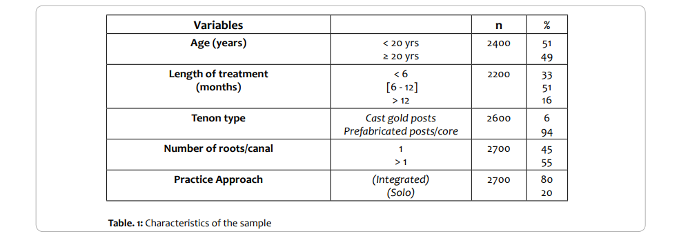
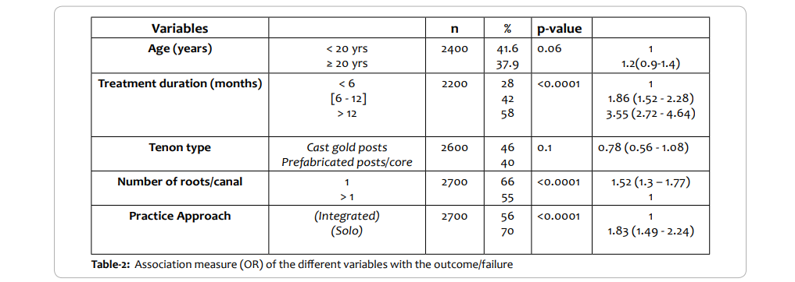
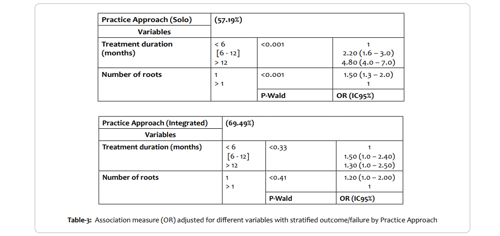

International Journal of Dentistry and Oral Health
International Journal of Dentistry and Oral Health
Research Article
Prosthodontics treatment using Post and Core Design: An Evaluation of Dental Collaborative Practice Contribution on the Outcome
Wybens Louis*, DMD, MSc, MPH, MHA
Deputy Head of Department, Department of Prosthodontics, and Consultant for Max Cadet Foundation, Professor of Dental Diagnosis, Biology and Epidemiology at University Autonome of Port-au-Prince, Haiti
Corresponding author: Louis
Deputy Head of Department, Department of Prosthodontics, and Consultant for Max Cadet Foundation, Professor of Dental Diagnosis, Biology and Epidemiology at University Autonome of Port-au-Prince, Haiti.,E-mail:wybens.h.louis@usherbrooke.ca
Article History:
- Received Date: December 13,2019
- Accepted Date: January 04, 2020
- Published Date:February 05, 2020
Abstract:
Prosthodontics treatment using a post to restore fractured crowns on where an endodontic procedure had been performed, might be suffered to some failures. This event remains a significant health issue that can benefit an intradisciplinary approach, involving both the endodontist and the prosthodontist, as an alternative to improve the outcomes. This article purpose is to review the opportunities for coordinated
intradisciplinary care between those specialties through the concept of complementarity relationship under “configuration” theories, by
testing whether intraprofessional collaboration in dentistry, through an integrated practice, can improve the prognostic of prosthesis crown
& bridges using dowel posts on endodontically treated tooth and estimate how it affects treatment failure.
We had conducted a longitudinal cohort study (retrospective study) using data collected from two dental facilities in Port-au-Prince, where
patients had received treatment from 2006 to 2013.
Our analysis revealed that factors like the duration of treatment (2.20 (1.6-3.0); 4.80 (4.0-7.0)) and the number of roots (1.50 (1.3-2.0)) which
have significant proficiency statistically (p < 0.001) to induce failure to appear to be increased in effect when considering a solo-based practice.
It also appears in our findings that using cast gold posts to restore fractured crown might be regarded as a protective factor (0.78 (0.56 -
1.08); p < 0.1) for the restored tooth. Although some articles have supported the use of prefabricated post/core in restoring endodontically
treated teeth, our findings suggest that permanent coronal restorations should have taken place as soon as possible to prevent fracture and
then failure, whatever the type of materials we made the post / core.
Intradisciplinary action among dental colleagues on caring issues requires, to be successful, that all parties to be involved in reducing
post-treatment complications and failures, by addressing on a common front all that can be considering as a potential risk and compromising
to the final restoration. This paradigm appears to be the feature of the complementary system, which allows through an integrated approach
the way to apprehend coercive elements.
Introduction
Dental posts have been performed for decades, and according to the
literature, it has been designed with different materials over the past
years, like metal, wood, and fiberglass(1,2). A post is a tenon, which is placed in the roots to serve as an anchorage to provide appropriate
support for a final crown or bridge(3,1). This technique is used in prosthodontics to restore fractured teeth when an endodontic procedure
can be performed,(4).In prosthodontics, it is not only about the restoration of structures lost; we also must preserve the remaining part of
the tooth(5) and assure in the meantime the quality of the treatment.
All this requires, according to Perel(6), an analysis of the crown to root
ratio and a root canal procedure that is relied on endodontics criteria's, and inevitably an assessment of the periodontal tissues that surrounded the root(7). Thus, when the coronal structure of the tooth is
lacking, one of the highest possible approaches in dentistry is the use
of the root canal space, but the success in the survival of endodontically treated teeth will require such treatment an optimal quality procedure(8). Like we observe during practice and corroborate in the literature, with appropriate quality endodontic treatment and observance
of therapeutic guidelines, pulpless teeth can serve as support for the final fixed structure. However, some factors like the thickness of the
dowel (post), the position into the root where it places, and other elements that could create stress on the tooth, have been considered
parts of the risks that could cause treatment failure (9). The literature has also mentioned as a risk factor, the waiting time between the endodontic procedure, regarding the time of filling material, and the one
to restore the crown with fixed ceramic(10). But, what about the relation between dental intraprofessional collaboration on the procedure?
Intraprofessional collaborative practice (IPCP) is related to the interaction between at least two professionals in the same field. According
to Fiquet(11), professional collaboration promotes the share of knowledge, expertise, skills, and responsibilities to ensure patient safety and
quality of care(12).If there is abundant literature on the type, the quality, and techniques related to post dental procedure(13), much controversy and empiricism remain, particularly around the appropriate methods. Although the
adéquate procedure system requires competences from the practitioner, there is lacking study in this area of dentistry, showing that IPCP contributes to more significant results. Thus, talking about competency in post endodontically treated teeth, the question is: how
skills through IPCP, regarding the state of practice, can help reduce failure in dental post-treatment, using team clinical decision making about choosing and placing the post?
To fully understand how an integrated approach through interprofessional collaboration, with regard of the state of competency (abilities
skills to perform endodontic and prosthodontic treatment), can interfere with the outcome of the restorative procedure, we conducted a
longitudinal clinical evaluation. To do so, we used most of the patient's chart that is coming from two privates'institutions localized around Port-au-Prince, where a high incidence of teeth had been receiving
endodontic therapy for ceramic restoration.
In this study, our goal is to test whether intraprofessional collaboration
in dentistry, through an integrated practice, can improve the prognostic of prosthesis crown & bridges using dowel posts on endodontically
treated teeth and to estimate how it affects treatment failure.
We obtained approval from the head manager of dental facilities and
the dentists at the respective clinics to carry out this study. The authors were not involved in the process of selecting the patients' files.
We made a copy of each data that has been chosen and provides identification for each of them with a combination of both the first letter
of their first and last name, the year of birth, and their rank. The ethical
guidelines considered throughout the study came from the 70th General Session of the IADR (IADR, 1992).
Key words:
Oral Practice, Dentists, Integrated practice, Intradisciplinary collaborative approach, Complementarity relationship,
Configuration
theories, Post and Core support, Prosthodontics, and Endodontics treatments
Materials and Methods
This study adheres to the theoretical framework related to the concept of complementarity in a partnership (14). Complementarity involves the notions of the “internal coherence of practices” and falls
under “configuration” theories. According to these theories, the ideal
combination of practices is the one that achieves the highest level of
internal consistency, with the highest potential to influence organizational performance(15) and, thus, outcomes of care. Therefore, we hypothesized that dental team collaboration using integrated practices
and corporate performance strategies is inversely related to post-dental failure. To verify this consistency through the integration practices,
we conduct a longitudinal cohort study (retrospective study), using
data as mentioned in the section from two dental facilities in Port-auPrince, where patients had received treatment from 2006 to 2013. A
total of 3800 dental patients'records, including film-based X-ray, was
selected from those who received prosthodontics treatment at these
facilities, using first, a systematic sampling with a sampling rate of 4.
Selection Criteria & Data Collection
We should mention that in other to get the final sample after collecting the data through the patients' recorded files, we have retained cases which have respected the following criteria:
Inclusion criteria: were enrolled in the study, first, all clinical patient's
records presenting a full-coverage fixed restorative prosthodontics
treatment with the post (cast or core), where an endodontically treated roots was performed. Secondly, the procedure must have performed by dentists who work at those two facilities and must have
been started between the period of 2006 and 2013. Data from patients'records must present elements regarding the first step process
diagnosis, therapeutic process (restoration), follow up with X-ray evaluation from endodontics treatment, initials of the dentists (to assign
his department), or the full dentist name.
Exclusion criteria: were not considered in this study; all patient's records without a prosthodontic treatment or with a prosthodontic
treatment without a post (cast or core) placed in endodontically treated roots, non-sign records procedures. Or patients who had had a follow up for any prosthodontics issues regarding an ancient post, which
was put in endodontically treated dental roots but was not performed
by the dentists who work at those two facilities.
A total of 3000 dental records were extracted from the pool, and we
create a standardized form from which we collected data. From that
number of patient's records, the 3000 were up to standard to be used
for the study.
Studied Variables
The analysis included data on the type of professional practice, and
patient outcome data were collected on all patients using the standardized form. The added variables for the study were:
A- Predicted variables
Age:
From the data patient record documents, we verified for the clients specific date of birth and determined their age, and we categorized this variable into two groups (< 20 years; ≥ 20 years), to better
understand the influence of biological development base on the stage
of maturation of both crown and root (16) and reduce bias
Treatment duration (months):
We categorized this variable into three
categories (below 6 months; between 6 and 12 months; more
than 12 months), considering the effects of the short and long-term
restoration on endodontic treatments (17,18). We determined the duration of the treatment by examining the date of the initial preparation
of the access cavity of the endodontic procedure (Time from access to
obturation) and the one for definitive fixation of the ceramic prosthesis (Time from obturation to fixed crown or bridge).
Tenon type:
we categorized this variable into two types/ groups,
based on the current procedure and materials that we used in the restoration of endodontically treated teeth(19,7).
Two different posts preparations were used (Cast gold posts; Prefabricated posts/core) after removing a portion of the gutta-percha from
each filled canal from the desired root.
Number of roots:
was defined as single if one post appeared to be
used in a dental root with no extension to other roots and multiple,
which means that was using more than one root.
Practice:
this variable was measured using the step by step procedure
on the patient's chart and treatment notes. It was based, besides, on
the fact that whether the overall process was made by one dentist or
by a team according to the patient's chart using the signature and the
department on the patient's records as criteria. This variable was then
categorized into an integrated practice (collaborative partnership)(20)
and silos of professional practice (overall procedure made by one person).
B- Dependent variable
Treatment outcome:
This variable is categorical, and it describes the issue in two groups:
Success: to explain the ability of the root complex structure (post and
teeth) to remain undamaged after a long period and provide functional retention;
Failurewas considering when any biologicals or mechanicals damage
affected the root complex structure of the restorative tooth, considering the Bernard G. N. Smith classification(21, 22).
Statistical analysis
Data were cleaned, checked for errors, and missing data before doing
our analysis. For our study, we conducted data analysis using Epi-info package, version 7.2. To show a description sample, we carried out
analysis using the usual methods of descriptive statistics. All our variables were categorized and recorded in groups. For contingency table
analysis, we performed Pearson’s test using the Chi-squared tests to
assess the differences in distribution between groups. All reported
p values were two-tailed, and statistical significance was set at 0.05.
Crude and adjusted prevalence with a 95 % confidence interval was reported across the demographic and structures indicators. We used
Logistic regression models to control potential confounders.
Therefore, each explanatory variable included in the logistic regression
models was selected according to a stepwise procedure. As a result,
we maintained only statistically significant variables for the model. We
presented our results as odds ratios (OR), to indicate risk with a 95%
confidence interval (CI). The observations and analysis concerned the
two facilities we have mentioned above, and we matched the findings
by the expected outcomes. We let the multilevel association modeling
test settle the results for the sake of obtaining the optimal predictors.
Results
Due to errors regarding the signing procedure or disintegrated X-ray
images and data entry, the sample that we used for the final analysis
was subject to some variations. Those attrition were responsible for
approximatively 10% of data missing, which could have eventually lead
us to restrictive bias.
Descriptive characteristics of the study sample
Table 1 summarizes the characteristics of the sample and his distribution.

Included in Table_1 are the clinical and demographic data that presented predicted factors in proportion. It showed that more than 90% of
tenon used in those facilities were prefabricated. It also revealed that two-thirds of treatment had lasted more than six months and that the
integrate collaborative practice was the most applicable approach
over there.

Table_2 shows the association of the predicted element/factors with
the outcome/failure. In this table, the estimated causes of the failures
can be expressed by treatment duration, which remains more than
six months, by number root/canal that is less than two, and by solo
practice approach which appeared to be significantly associated with
failure of the prosthodontics treatment.
The failure score is higher when an individual practice is perceived as compared to integrated practice. This score appears to be significant
when a single root/canal has been used, corresponding to the use
of multiple roots/canals or extensions and for treatments that lasted more than six months compared to those whose duration of the
whole procedure was shorter (Table 2).
However, it appears that using cast gold posts might be a protective
factor for the restored tooth, but this relation was not statistically significant (p= 0.1).

Table_3 presents ORs adjusted by logistic regression of the outcome/
failure categorized with practice. About the care approach, considering a “solo-based practice,” after adjusting for the other variables
of the model, the duration of treatment (2.20[1.6-3.0]; 4.80[4.0-7.0])
and the number of roots (1.50[1.3-2.0]) remain significantly associated
with the failure, while also projecting an increase in the strength of the
association. On the other hand, for integrated collaborative practice,
after adjusting for the other variables in the model, no variables were
significantly associated with failure (Table 3).
Discussion
Characteristic of the findings
Significant progress has been mainly made now and days, regarding
the placement techniques and procedures, the roots canals treatments and the materials also used in the post for management of endodontically treated tooth. This work evaluated the treatment status
of the endodontically treated tooth using core/post in the prosthodontics department with a dental intraprofessional collaborative approach, as well as the association between some potential predictors
like placement techniques, endodontics treatment steps, and materials that could influence the outcome. This study may suffer inherent
limitations due to missing values and to the fact that the two clinics
have a different management structure regarding the intraprofessional collaboration. The first one could impact our sample and the second
one how to estimate the result better. Fortunately, the use of a multilevel modeling test is enabled to considering those gaps and was used to be able to spare some bias by using a fixed-effects model where the
effects of both types of a variable can be estimated and be adjusted.
The study design is also helping by limiting some effects like those of
confounding factors.
The results obtained indicate, when assessing the prognosis for final
restoration crown or bridge, that an integrated practice approach, a
procedure with adequate time for the root canal and definitive restorative procedure, then using more roots/canals or space to place the
posts are offering proper therapeutic prosthodontic treatment. Our
findings seem to support then the evidence that links to “configuration” theories related to collaboration in dental integrated approach
care. Some of the issues encountered in endodontically treated teeth
regarding prosthodontics restoration according to our findings were
the length of the treatment and the practices' approach. Our results
also add to the literature essentials facts.
First, a lot of progress has been made in placement techniques and
materials using a dental post with an endodontically treated tooth.
Most of the tenons (post/core) currently available are mainly made of
either carbon fiber, and more recently manufactured systems involve
carbon-fiber-reinforced posts covered with composite (23). But, as we
can see, the traditional custom-cast dowel core made of metal provides a better adaptation, and it was considered a protective factor
in our study. This support Coelho's assertion, who find that using cast
gold post tends to affect less the dentine by causing a minimum deformation (24). Even though the cast gold post was the most implicated in failure in our study. This fact contrasts with some results in other
studies that suggest more retention, more elastic, and more stability
with some prefabricated post-and-core systems like fiber-reinforced
composite resin post-and-core system(25,26) Perhaps, it is because, in
our study, gold was the most used metal, while for them, it was more
stainless steel. Second, we collected data from two institutions over
seven years (from 2006 to 2013), and that allowed us enough time to
observe the outcomes and the incidence of all the other factors. The
use of this strategy as a design for our study, as we have indicated
in the first paragraph in the section above, helps improve the validity
of our findings. Although we conducted our research over a shorter
episode of time compared to Fokkinga ones, which have lasted more
than ten years to clinically observe the result of post systems and
crowns restoration(27), one fact is that the long-term clinical studies are
essential for evidence-based dentistry and clinical making decision
Predicted factors that appeared to be affecting the outcome of the final crown restoration
Another relevant fact, most of the patients in our study, like fifty percent (50%), appear to be in their twenties. This fact is not entirely different from the findings in Lee study's, which was conducted in a dental teaching hospital where seventy percent (70%) of the patient were
crossing their fifties(28). Patients' age is a preoperative prognosis key
because it seems like older people are probably the most vulnerable
to have failure root canal treatment, base on the physiological aging
process(29,6). This effect can be a possible explanation for the risk of
failure in the late thirties like it shows in our sturdy. However, the results demonstrating this was not statistically significant
One of the problems encountered in managing endodontically treated tooth for prosthodontics treatment is the length of the treatment.
Even though proper endodontics procedures and dowel placement
have been performed adequately, according to our study and the findings in Imura(30) study, who have evaluated the treatment outcome of
initial endodontic treatment and nonsurgical retreatment performed
by an endodontic specialist, the treatment duration that has been lasted more than twelve months like in our study and twenty-four months
in Imura study had a significant impact on treatment and can jeopardize the outcomes. These findings suggest that a recall for any doubt
or signs of symptoms after endodontic treatment must be addressed
in less than twenty-four months. Other studies also found that a longterm period of recalling more than five years affects the success of the
procedure(31).
According to our results, most of the restoratives procedures where
a single root/canal was used after the endodontic procedure to retain
the post have led to a higher risk of failure. This finding is probably the
result of the higher risk of cracks on the root's wall when areas of highstress concentration involve only one canal.
The pattern of a silos practice shows that there is a considerable increase in the risk of failure base on the results of this study. It appears,
in this pattern mainly, when the duration of treatment tends to be
longer, or when the number of root/canal use is not sufficient. Nevertheless, other analyzes made from other studies similar to the same
issues find different results. For those studies, the element incriminated much more in the failure appears to be the endodontic procedure,
the quality/quantity of dentine surrounding the root, and the choice of
the root itself(32). Indeed, in the study of Ricucci et al. (Ricucci, D. et al.,
2011)(33) who underwent endodontic treatments which had performed
by a single operator, in a periodically controlled for five years, the risk
of failure was lower when endodontic treatment was performed on
a single root in a patient. That sounds to be reasonable because it
offered fewer operative procedures for a single operator and not to
mention the minimum biomechanical risk of failure that represents an endodontic treatment in a single root(34). While in integrated practice,
the number of practitioners attenuated the risk and holds great potential to improve patient satisfaction and health outcomes, as Chinn
H. Courtney shows in his article(35), integrated care not only assures
excellent potential to improve patient satisfaction but also guarantee
better health outcomes.
Therefore, problems related to the duration of the treatment and the
number of treated roots using a post as a support for the definitive
prosthetic restoration can be detected and addressed using an integrated approach like collaboration capability, which enables dynamic capabilities and interactive performances. This type of practice is
an opportunity for new ways caring in which dentistry professionals
must involve in the resolution of dental and health problems in general through an interprofessional and collaborative approach(36,37,38).
About, substantive results in this review suggested that two related
factors like better accessibility in managing appointments to reduce
delays and an integrated approach to anticipating complications can
lead to better outcomes and effectiveness.
Conclusion
Cooperation between dental practitioners can offer a great perspective in promoting high-level standards of dental care for patients. Interprofessional and intraprofessional collaboration in other fields in
the health sciences fulfills the requisites of evidence that this form of
practice helps improve quality health care. While the literature seems
to report little difference in the outcomes between the type of practice regarding the failure of prosthodontics treatment using post and
core design on the endodontically treated tooth, our findings, therefore, seem to show that factors which appear to affect the outcomes
are more imply statistically had increased in intensity.
Our work might suffer some limitations. The use of restricted factors
over others, like the absence of coronal ferrule, occlusal loads, or the
gender that could also be considered as a critical risk for potential fractures, has not allowed us to extend our findings to other communities
of dental practice. Our study took place in facilities where an integrated approach exists but not in a formal manner or strictly implemented
yet. This strategic approach could have probably created a selection
bias. That is why we choose the multilevel modeling test, which was
essential for our statistical analyze and to prevent this from affecting
our results.
Moreover, our findings cannot pretend to address a lack of competency when it comes to analyzing the quality practice of silos of professional practice. Also, the lack of comparative studies with similar risk
factors and outcomes criteria with comparable time intervals limited
the comparison of these standards of practice when it comes to prosthodontics treatments using this procedure. These two elements then
do not allow us to conclude in the way that there could be a lack of
competence when it comes to comparing the two forms of practice.
Despite these limitations, this study allowed us to observe some facts:
first, after endodontic treatment, the procedure for the post and core
placement and permanent coronal restorations should replace any interim materials as soon as possible to prevent subsequent tooth fractures, which will probably conduct to failure.
Second, the use of endodontically treated teeth for prosthodontics
treatment using post and core design must carefully proceed when
one root is involved in the crown's restoration, mainly when this kind
of procedure includes silos of professional practice. Because this kind
of process and management demonstrated a rate of failure that is
significantly higher than other types of procedures or practices in our
findings.
Third, there are many controversial conclusions concerning the best
material to use for the post when it comes to restoring endodontically treated teeth. While our findings showed that gold could serve as a
protective factor, post and core in any material must be used when the
coronal structure is insufficient to provide support to the restorative
material, as it shows in Louis's case study (Louis, W., 2015)(7) .
In this article, we have highlighted the concepts of complementarity, relationship capital, and intraprofessional collaboration to show
the impact of different practice characteristics on the performance
related to restoring endodontically treated teeth. Considering that
intraprofessional cooperation in this area is a promising approach to
reduce the failures reported during endodontic and prosthetic treatment by anticipating what each actor concerned in their field may lead
to lowering failure by addressing a common front the potential risk
factor. This new approach is the motivation for current research and
the forms of clinical practice. Since a few parts of the literature reports
on dental procedures and human aspects are less considered in prosthetic failures, we thought it was relevant to lay the groundwork. As
such, we hope that the elements collected in this study can be useful
to develop future research and practice. Notably, subjects related to
dental practices and interprofessional collaboration in the dental field
with a client-centered approach. Since teamwork should be considered a strength that can bring different skills, clinical judgment together for the potential quality of care, the complementarity approach will
lead to surprising outcomes and quality care for the clients.
Acknowledgement:
Jouvens Corantin, CPA, MAAC.
Administration and Finance Director.
Reference
- Smith CT, Schuman, NJ, Wasson W. (1998). Biomechanical criteria for evaluating prefabricated post-and-core systems: a guide for the restorative dentist. Quintessence Int. 29:305-312.
- Chiche G, Weaver C, and Pinault A. (1990). Divergent post and tube and screw systems for the short crown preparation. Quintessence Int. 10: 813-820.
- Decker, BC. (2000). Ingle. Endodontics, 5th Edition, 19.2.3.
- Mahmoud Khaled AL-Omiri and al. (2010). Fracture Resistance of Teeth Restored with Post-Retained Restorations: An Overview. Elsevier, Journal of Endodontics. Volume 36, Issue 9, Pages 1439-1449.
- DeVan, MM. (1952). The nature of the partial denture foundation: suggestions for its preservation. J Prosthet Dent; 2: 210.
- Perel ML, Muroff FI. (1972). Clinical criteria for posts and cores. J Prosth Dent; 28: 405411.
- Louis, W. (2015). The use of the Inlay-core in managing a maxillary central incisor fracture: A case report at the dental clinic of Max Cadet Foundation. Int J Dent & Oral Heal.1:1, 1-08.
- Kirkevang, L. L., Orstavik, D., Hörsted-Bindslev, P., Wenzel, A. (2000). Periapical status and quality of root fillings and coronal restorations in a Danish population. Int Endod J; 33: 509-515.
- Standlee, JP, Caputo, AA, Holcomb, J, Trabut, KC. (1980). The retentive and stress-distributing properties of a threaded endodontic dowel. J Prosthet Dent; 44: 398-404.
- Naoum, H. J., Chandler, N. P. (2002). Temporization for endodontics. Int Endod J; 35: 964-978.
- Fiquet, Laure, and al. (2015). An interprofessional training program to learn to work together. The perception of healthcare students. Medical Pedagogy; 16 (2): 105-117.
- Health Canada. A Request for Proposal from Health Canada: Interdisciplinary Education for Collaborative, Patient-Centred Practice: Discussion paper & Research report. Ottawa, ON: Health Canada; 2003.
- Salvi GE, Siegrist Guldener BE, Amstad T, Joss A, Lang NP. (2007). Clinical evaluation of root-filled teeth restored with or without post-and-core systems in a specialist practice setting. Int Endod J; 40:209-215.
- Sarkar, M. B, Echambadi Raj, Tamer Cavusgil S., and Aulakh S. Preet, (2001). The Influence of Complementarity, Compatibility, and Relationship Capital on Alliance Performance. Journal of the Academy of Marketing Science, Vol 29, Issue 4, pp. 358-373.
- Dess, G.G., Newport, S. and Rasheed, A.M.A. (1993). Configuration Research in Strategic Management: Key Issues & Suggestions.
Journal of Management, Vol. 19, No. 4, pp. 775-795.
- AlQahtani S.J, Hector M.P, and Liversidge H. M. (2010). Brief communication: The London Atlas of human Tooth Development and Eruption. American Journal of Physical Anthropology. 142:481-490.
- Cheung G.S, Chan TK. (2003). Long-term survival of primary root canal treatment carried out in a dental teaching hospital. Int Endod J 2003; 36: 117-128.
- Heling I., and al. (2002). Endodontic failure caused by inadequate restorative procedures: review and treatment recommendations.
J Prosthet Dent; 87: pp. 674-678.
- Woolsey G, O'Mahony A, Hanson, PA. (1999). Restoration of endodontically treated teeth with posts and cores. J Ir Dent Assoc;45(3):91-4.
- Tsasis, P., Evans, J.M., and Owen, S. (2012). Reframing the challenges to integrated care: a complex-adaptative systems perspective.
Int J Integr Care; 12: e190; pp. 1-11.
- Anusavice, Kenneth J. (2012). Standardizing failure, success, and survival decisions in clinical studies of ceramic and metal-ceramic fixed dental prostheses. Elsevier, dental materials: 28: 102-111.
- Bernard G N Smith and Leslie C Howe. (2007). Planning and making crowns and bridges. Informa Healthcare, 4th edition, pp. 1-337.
- Smith CT, Schuman N. (1998). Prefabricated post-and-core systems: an overview. Compend Contin Educ Dent. 19:1013-1020.
- Coelho CS, Biffi JC, Silva GR, Abrahão A, Campos RE, Soares CJ. (2009). Finite element analysis of weakened roots restored with composite resin and posts. Dent Mater J. 28:671-8
- Assif D, Bitenski A, Pilo R, et al. (1993). Effect of post design on resistance to fracture of endodontically treated teeth with complete crowns. J Prosthet Dent; 69:36-40.
- Terry, A. D., Leinfelder, F.K., Geller, W. (2018). Aesthetic & restorative dentistry: Material selection & techniques. Stillwater, Minn: Everest Publishing Media (3rd Ed.), 792 pp.
- Fokkinga Wietske A, et al. (2007). Up to 17-year controlled clinical study on post- and-cores and covering crowns. J Dent; 35:778-786.
- Lee, A. H. C., Cheung, G. S. P., & Wong, M. C. M. (2012). Long-term outcome of primary non-surgical root canal treatment.
Clinical Oral Investigations, 16(6), 1607-1617.
- Ørstavik D, Qvist V, Stoltze K. (2004). A multivariate analysis of the outcome of endodontic treatment. Eur J Oral Sci; 112: 224-230.
- Imura Noboru and al. (2007). The Outcome of Endodontic Treatment: A Retrospective Study of 2000 Cases Performed by a Specialist. Journal of Endodontics, Volume 33, Issue 11, pp. 1278-1282.
- Benenati, F.W., Khajotia, S.S. (2002). A radiographic recall evaluation of 894 endodontic cases treated in a dental school setting.
J Endod, 28, pp. 391-395.
- Peutzfeldt, A., Sahafi, A., & Asmussen, E. (2008). A survey of failed post-retained restorations. Clinical Oral Investigations, 12(1), 37-44
- Ricucci, D., et al. (2011). A prospective cohort study of endodontic treatments of 1,369 root canals: results after five years.
Oral Surg Oral Med Oral Pathol Oral Radiol Endod; 112:825-842.
- Dietschi D, Duc O, Krejci I, Sadan A. (2007). Biomechanical considerations for the restoration of endodontically treated teeth: a system atic review of the literature-Part 1. Composition and micro- and macrostructure alterations. Quintessence Int; 38:733-743.
- Chinn H. Courtney, (2016). The pediatric dental trauma patient: Interdisciplinary collaboration between the orthodontist and pediatric dentist. Seminars in Orthodontics, Vol 22, No 3, pp. 205-210.
- Meyer, M.D., and al. 2016. Policy development fosters collaborative practice. Dental Clinics of North America, Vol 60; Issues 4, pp. 921-942.
- Kaufman, B.L., Henshaw, M.M., Brown, P.B., and Calabrese, M.J., 2016. Oral health and interprofessional collaborative practice. Dental Clinics of North America, Vol 60; Issues 4, pp. 879-890.
- Wybens Louis (2016). A Dental Practice Analysis in the area of Port-au-Prince: A View on the Integrated Periodontal Care Approach.